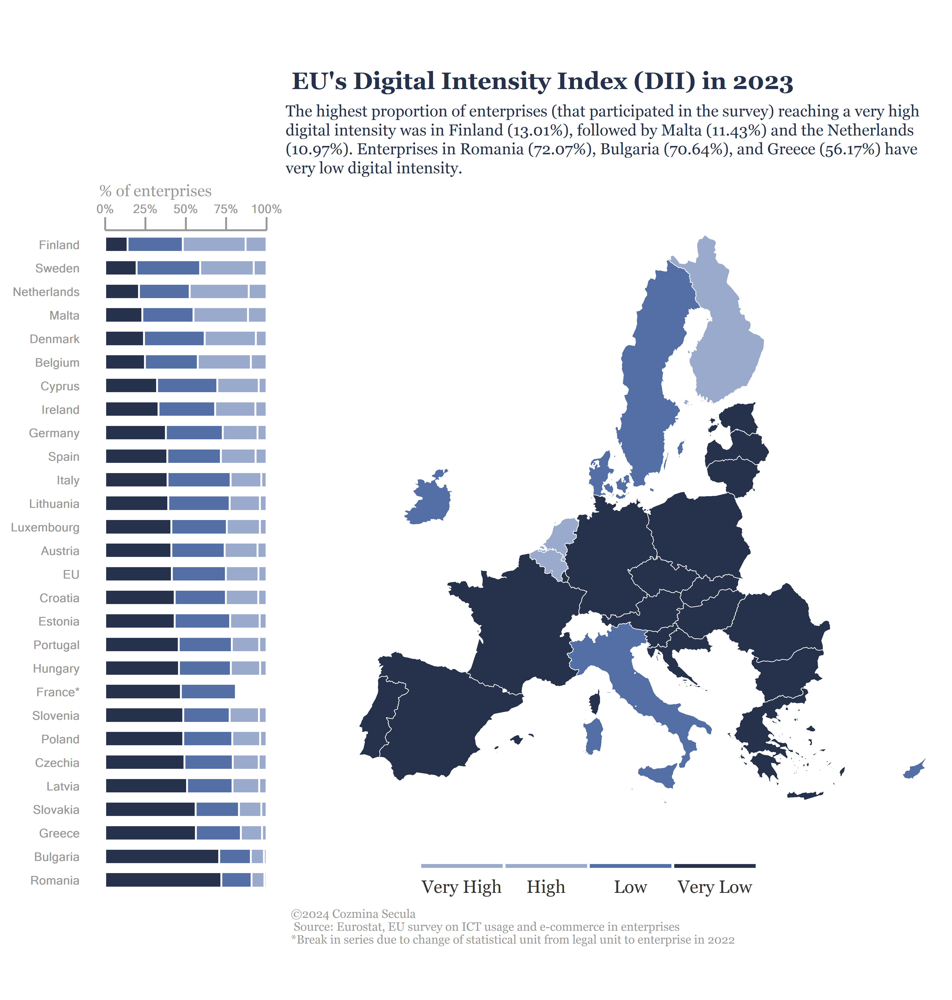

The level of digital intensity of EU enterprises. An analysis of data from the EU survey on ICT usage and e-commerce in enterprises provided by Eurostat, the Statistical Office of the European Union, based on data reported by the countries.
data analysis
data visualization
eurostat
digital intensity index
Author
Cozmina Secula
Published
July 15, 2024
Translate Widget

EU’s Digital Intensity Index (DII)
Digital Intensity Index (DII) is a composite indicator, derived from the EU survey on ICT usage and e-commerce in enterprises.
The indicator is calculated based on 12 variables, with each of the variables having a score of 1 point. The DII distinguishes four levels of digital intensity for each enterprise:
Enterprises with very low digital intensity index (0-3 points)
Enterprises with low digital intensity index (4-6 points)
Enterprises with high digital intensity index (7-9 points)
Enterprises with very high digital intensity index (10-12 points)
Additionally, based on the four levels of the DII, a “basic level” of digital intensity is calculated for monitoring the goal of the Digital Decade. A basic level of digital intensity entails the use of at least four of the twelve selected variables, which means it includes enterprises with a low, high and very high level of the DII, excluding the very low level.
Enterprises with basic level of digital intensity in 2023
Code
library(DBI)library(tidyverse)library(DT)sleep_default <-3Sys.sleep(sleep_default)con <- DBI::dbConnect(RPostgres::Postgres(),dbname ='digital_transformation_of_business', host ='localhost', port =5432, user =Sys.getenv("DEFAULT_POSTGRES_USER_NAME"),password =Sys.getenv("DEFAULT_POSTGRES_PASSWORD"),bigint ="integer") # change integer64 to integerdii_eu_countries <-dbGetQuery(con, 'SELECT y."ExpPeriod" AS "Year", c."ExpCountryCaption" AS "Country", c."ExpCountry" AS "geo", i."ExpIndicatorCaption" AS "Indicator", es."ExpEntSizeCaption" AS "Enterprise Size", a."ExpActivityCaption" AS "Activity", u."ExpUnitCaption" AS "Unit", COALESCE(CAST(dwa."Value" AS decimal) *100, 0) AS "Value", dwa."Flags" , n."Note" FROM public."DataWithAggregates" dwa INNER JOIN public."Years" y ON dwa."IdYear" = y."IdYear" INNER JOIN public."Countries" c ON dwa."IdCountry" = c."IdCountry" INNER JOIN public."Indicators" i ON dwa."IdIndicator" = i."IdIndicator" INNER JOIN public."EntSizes" es ON dwa."IdEntSize" = es."IdEntSize" INNER JOIN public."Activities" a ON dwa."IdActivity" = a."IdActivity" INNER JOIN public."Regions" r ON dwa."IdRegion" = r."IdRegion" INNER JOIN public."CustBrkdwns" cb ON dwa."IdCustBrkdwn" = cb."IdCustBrkdwn" INNER JOIN public."Units" u ON dwa."IdUnit" = u."IdUnit" INNER JOIN public."Notes" n ON dwa."IdYear" = n."IdYear" AND dwa."IdNote" = n."IdNote" WHERE y."IdYear" = 23 AND c."IdCountry" IN (2,3,4,5,6,7,8,9,10,11,12,13,14,15,16,18,19,20,21,22,23,25,26,27,28,29,30,31,45,48) AND i."IdIndicator" IN (1785,1786,1787,1788,1940,1941,1942,1943,2400,2401,2402,2403,2534,2535,2536,2537,3159,3360) AND es."IdEntSize" = 2578 AND a."IdActivity" = 2585 AND r."IdRegion" = 2631 AND cb."IdCustBrkdwn" = 2632 AND u."IdUnit" = 16ORDER BY "Value";')dii_filtered <- dii_eu_countries |>select(Year, Country, Indicator, Unit,Value) |>filter(Indicator =='Enterprises with at least low (basic) digital intensity index (DII Version 3)') |>mutate(Value =as.numeric(round(Value, 2)),Year =2023)datatable(dii_filtered, options =list(pageLength =5, scrollY =TRUE),caption ="Source: Eurostat (https://ec.europa.eu/eurostat/web/digital-economy-and-society/\ndatabase/comprehensive-database)")
Digital Intensity Index Composition
The DII composition varies between different survey years, depending on the questions included in the survey. Below is the composition for the 2023:
Enterprises where more than 50% of the persons employed have access to the internet for business purposes.
The maximum contracted download speed of the fastest fixed internet connection is at least 30 Mb/s.
Enterprises with e-commerce sales of at least 1% turnover.
Enterprises where web sales were more than 1% of the total turnover and B2C web sales more than 10% of the web sales.
Buy cloud computing services used over the internet.
Enterprises buying sophisticated or intermediate cloud computing services.
Use two or more social media.
Use any social media.
Data analytics for the enterprise is performed by the enterprise’s own employees or by an external provider
Use any AI technology.
Enterprises having ERP software package to share information between different functional areas.
Enterprises using Customer Relationship Management (CRM).
More information about Digital Intensity Index here.
The visualization was inspired by Milos Popovic and his tutorial on making a visualization with a graph and a map.